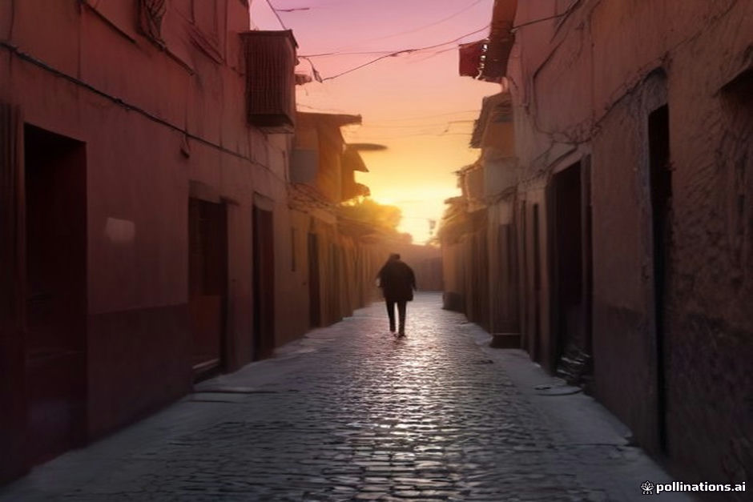

Marrakech Menara Airport is compact and efficient, but the friction starts the moment you step through the arrivals doors. If your riad sits inside the car-free medina, the last three hundred meters — from the taxi drop-off to the riad door — are where most first-time travelers lose their calm.
Handling that arrival well is not about being hostile. It is about knowing how the airport, the taxis, and the medina drop-offs actually work, so you reach your courtyard without an argument and start your desert trip rested.
Exiting the terminal and ignoring the first wave
Ignore anyone inside the terminal or just outside the doors who approaches you offering directions. Casual porters will grab a wheeled suitcase before you can blink, and once they touch it they expect payment. Keep a firm hand on your bags and keep walking toward the official taxi rank, where airport staff in high-visibility vests manage the queue.
- Never let anyone take your rolling suitcase out of your hands.
- Ignore claims that your riad is closed or unreachable.
- Look for uniformed airport staff near the taxi stand.
Cash, SIM cards, and the arrivals concourse
Telecom kiosks for Maroc Telecom, Orange, and Inwi hand out free SIM cards, though you pay for the data package. Five to ten gigabytes costs little and gives you maps and messaging for the whole trip, so take ten minutes to set it up before going outside.
Skip the currency windows inside the baggage hall, which offer poor rates. Use the bank ATMs in the public arrivals concourse or just outside the terminal. Moroccan ATMs usually dispense 200 MAD notes, so break one inside the airport by buying water — an alley porter handed a 200 note will rarely admit to having change.
- Get a local SIM with 5 to 10 GB of data before leaving the terminal.
- Withdraw from bank ATMs, not airport currency kiosks.
- Break large notes inside the terminal for small tips.
Taxis: the official kiosk versus a riad transfer
Marrakech introduced an official taxi booking kiosk directly outside the terminal. You state your destination, pay a regulated flat fee by card or cash, receive a printed voucher with a QR code, and are directed to the next waiting taxi. Expect roughly 100 MAD in daylight and 150 MAD after dark for a standard run to the edge of the medina.
Many riad travelers still prefer a pre-booked arrival transfer through their accommodation, typically 150 to 250 MAD. It costs a little more, but the riad knows when the car arrives and sends a staff member to meet it at the medina gate. Late at night or with family, that hand-off removes all street-level ambiguity.
If you take a taxi, confirm the price or the meter before loading a single bag. Refuse an absurd quote like 300 MAD and walk to the next car. Ride-hailing apps such as Careem are restricted inside the airport perimeter, so do not count on them for pickup.
The drop-off point and the handcart hustle
Cars cannot enter most of the medina. Your taxi will stop at a peripheral square such as Jemaa el-Fna, Bab Doukkala, or Riad Laarouss. The moment the doors open, freelance porters with wooden handcarts will offer to haul your bags.
A handcart is a legitimate service when the price is agreed: 20 to 30 MAD per cart for a short walk. Problems start when the terms are vague. If you did not ask for help, say "La, shukran" and keep your hand on the handle. If someone grabs your bag and starts walking, stop and take it back — letting someone roll it ten steps is treated as hiring them, and the demand at the door can jump to 50 or 100 MAD. Our medina luggage guide explains the hand-off in more detail.
The "road closed" trick and fake guides
The most common trick is casual misdirection. As you walk with luggage while looking at your phone, someone will say the road is closed, the mosque is the only way through, or there are no riads down that alley. The goal is to turn you around and then charge a guide fee.
Ninety-nine percent of the time the alley is open. A real blockage has barriers, scaffolding, and workers — not a teenager standing at the corner. Download Maps.me or Google Maps with the medina saved before you fly, and if you need to ask, step into a shop or pharmacy and ask the shopkeeper rather than someone lounging on the pavement.
Using offline maps to reach the door
GPS works well enough in the narrow alleys to keep you oriented even when the cell signal jumps. If you get genuinely lost, step inside a fixed storefront and ask the owner to call your riad. Most managers will send someone to meet you at a nearby landmark rather than let you keep circling.
- Download offline maps before boarding your flight.
- Ask shopkeepers, not idle men on corners.
- Call the riad if you are within five minutes of the door.
| Option | Cost range (MAD) | Drop-off | Trade-off |
|---|---|---|---|
| Pre-arranged riad transfer | 150 - 250 | Medina gate nearest the riad | Escort to the door; highest cost |
| Official airport taxi kiosk | 100 - 150 | Nearest drivable square | Fair fixed price; walk to the riad yourself |
| Public bus line 19 | 30 per person | Jemaa el-Fna edge | Cheapest; infrequent and far from many riads |
| Street taxi negotiation | Varies, often high | Varies | Not recommended outside the kiosk |

Illustration, not a photograph — for the real thing, you'll have to stand on the ridge yourself.
Quick answers
A few follow-up questions travelers ask about this.
How can I tell if someone meeting my taxi actually works for my riad?
Legitimate riad staff know your name and booking details without asking. If a stranger asks which riad you are looking for and then claims to work there, they are an unofficial guide hoping for a tip.
What should I do if an alley really seems blocked?
Step into an active shop such as a grocery or bakery and show the merchant your riad address. Shopkeepers know the neighborhood and will point the right way without asking for money.
Does Marrakech airport have Uber or Careem?
Careem operates in Morocco, but pickups inside the Marrakech airport perimeter are heavily restricted by taxi regulations. Use the official kiosk or a pre-booked riad transfer.
Should I exchange money at Marrakech airport?
Only change a small amount for immediate taxi fare. Bank ATMs and city exchange offices give better rates than the baggage-hall currency windows.
Do Marrakech taxis accept card payments?
No. Airport and city taxis take cash in Moroccan dirhams. Keep small notes ready for the fare and for tips.
Planning your own route?
Tell us your dates and what matters to you — we'll answer with a straight recommendation, not a brochure.
Send an inquiry See the itineraries